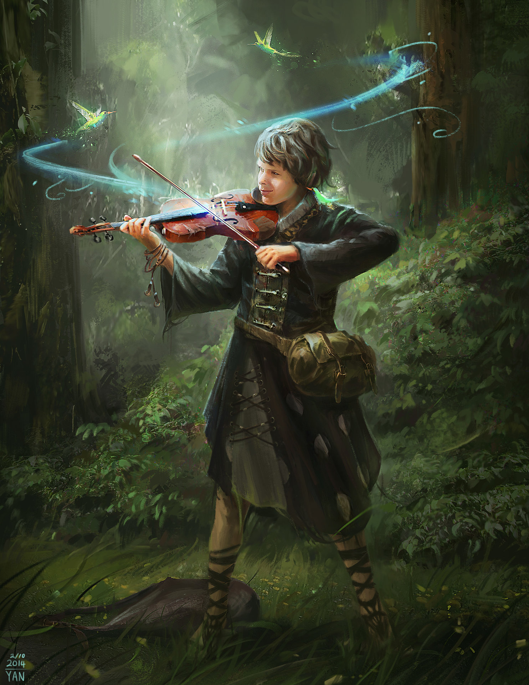
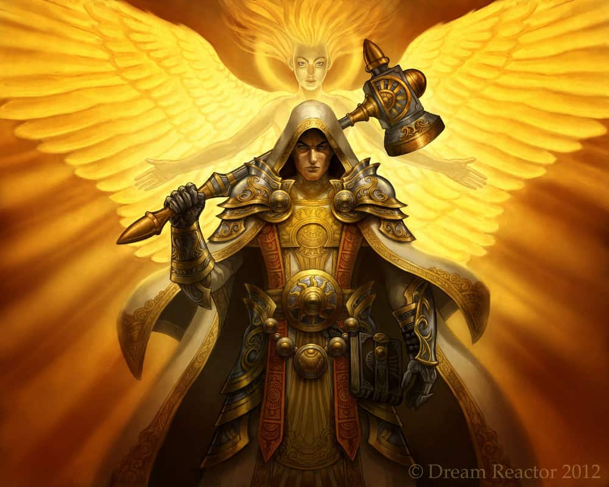

In the fifth edition of Dungeons and Dragons, there are twelve classes. Although they are obviously intened for the game, these classes can also exemplify
many of the classic archetypes we find in our favorite stories. Use this guide to help identify certain personalities and see if your favorite characters
fit any of the roles below!
The Barbarian seems to have a natural advantage in battle, to the point of often not even wearing armor. They charge head-first into the most dangerous situations
with zero fear of the consequences. Their tendency is to be a somewhat irrationa, emotional character, using channeled anger and intimidation to overcome obstacles.
They can be inspiring and even funny, though usually by accident alone. There's no denying this character's natural bloodlust and will excel in action-based adventures.
Famous Barbarians: Conan, The Hulk, Khal Drogo (Game of Thrones)
Bards

Bards are the artists of the world. Their role is best served as inspiration and support to those around them. They are the embodiment of charisma and use this
talent as much as they can. Sadly bards can be hard to find in films as their role of narrator and support can be hard to describe. But in certain worlds they
provide a unique type of character that is addictively charming.
Famous Bards: Deadpool, Star-Lord (Guardians Of The Galaxy), C-3PO
Clerics

The most defining aspect of a Cleric is their devotion to a god or deity. This defines the Cleric moreso than any act such as healing or protection. Although
most Clerics would consider themselves good or holy, there are gods in many worlds that are evil. This character is usually a very